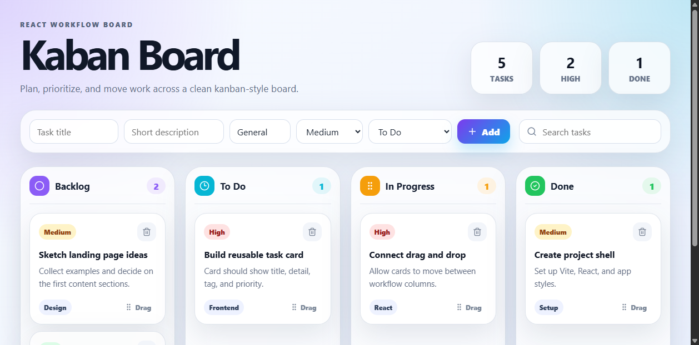
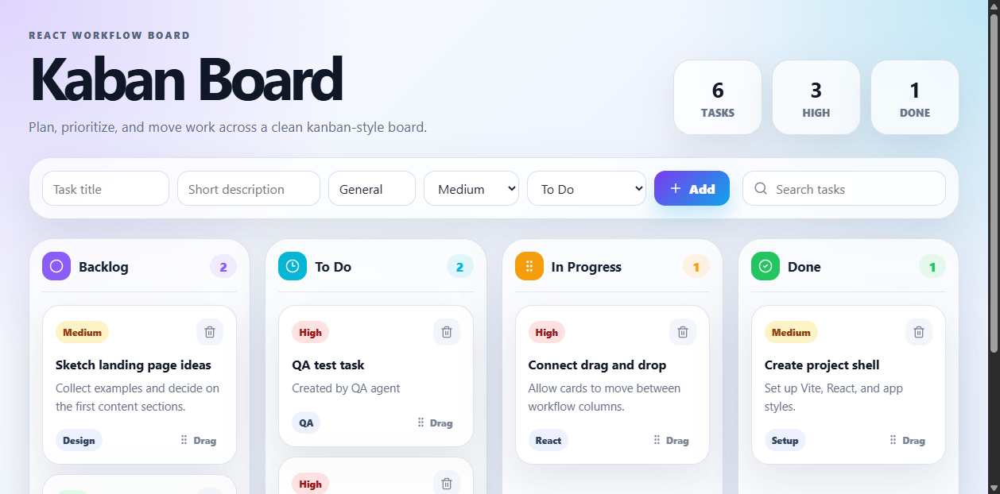
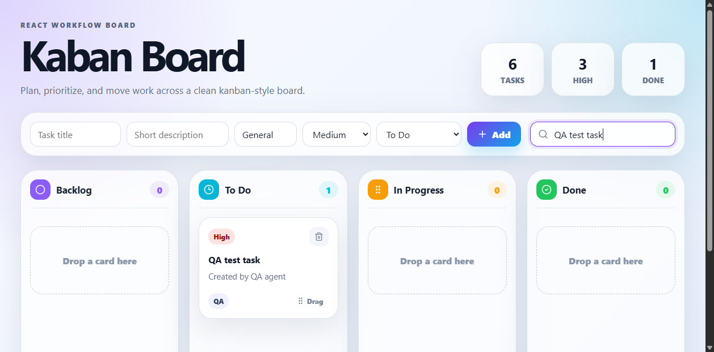
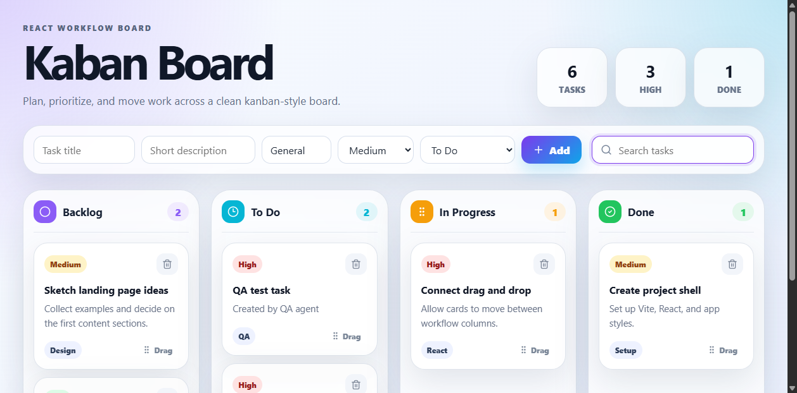
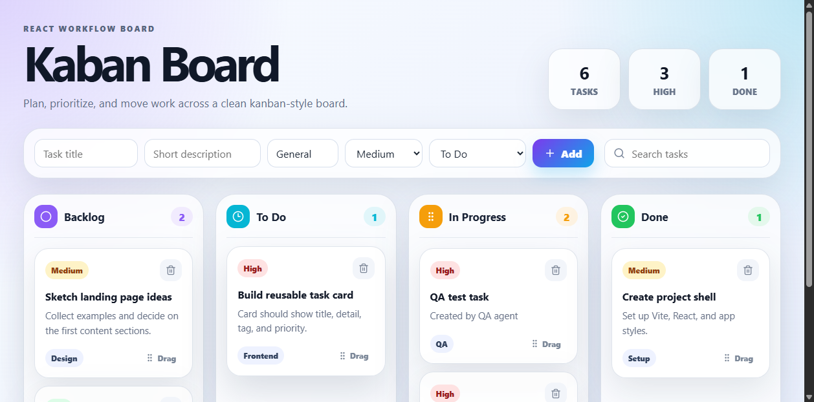
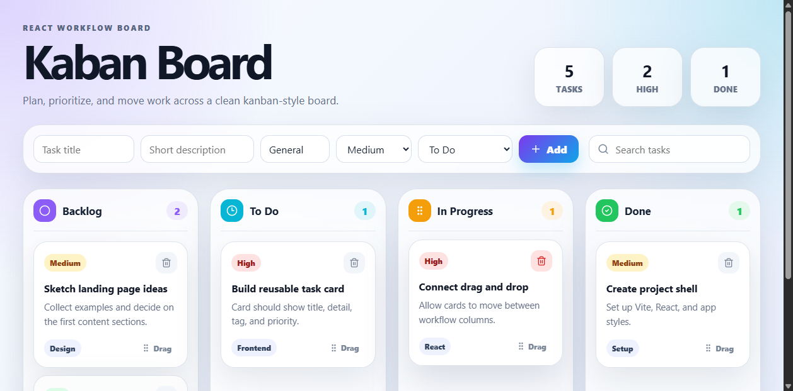
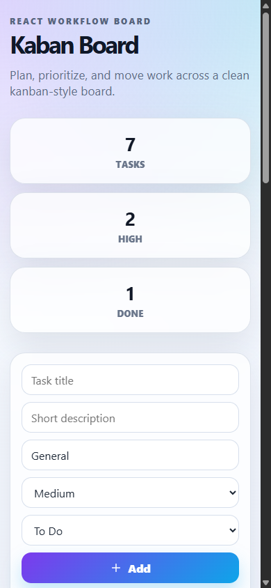
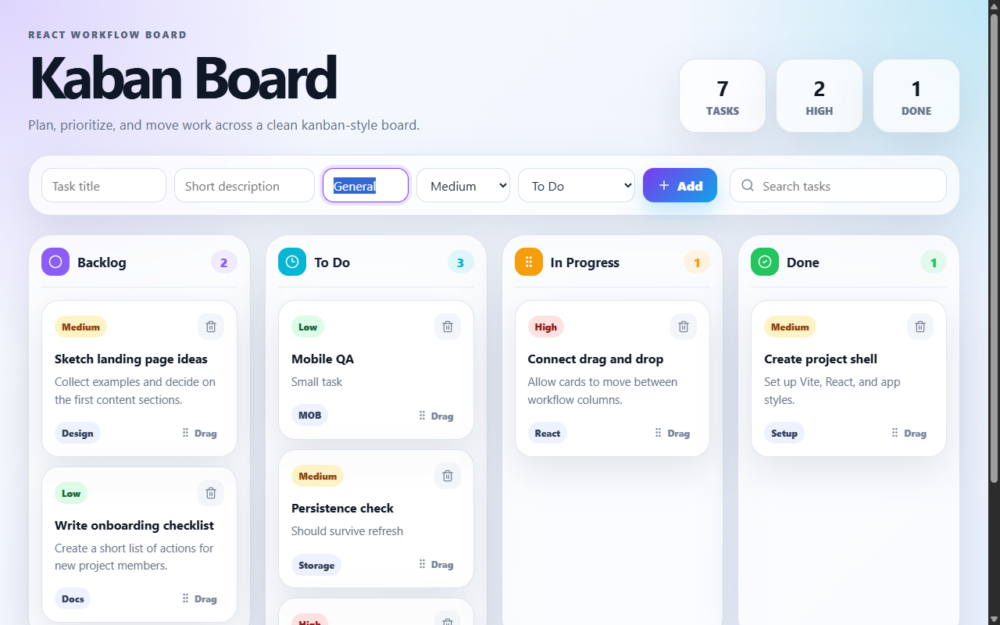
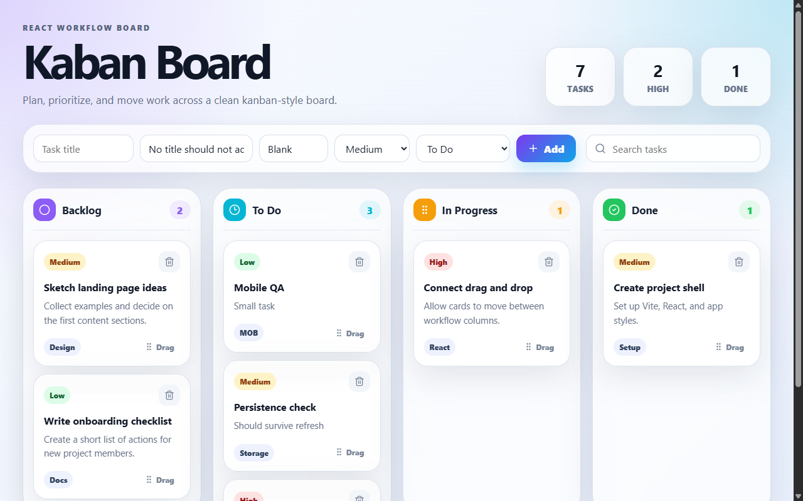

QA evaluation report
Kaban Board UI smoke test
Smoke-tested the React Kaban Board with agent-browser. All requested test cases passed and evidence was captured as screenshots plus a WebM session recording.
Verdict
Pass. The board rendered correctly and supported task creation, filtering, drag-and-drop between columns, deletion, localStorage persistence, responsive mobile usage, keyboard navigation smoke checks, and blank-title prevention.
Environment
- Project
C:\Users\Ben10\Documents\Kaban board- App URL
http://localhost:5173- Browser tool
agent-browserCLI with Chrome / HeadlessChrome 148- Viewports
- Desktop 1280×800; mobile 390×844
- Branch/commit
- No git repository detected in app folder during run.
- Auth/secrets
- No login was required. No secrets, cookies, exported auth state, tokens, or persistent browser profiles were copied into this report.
Commands run
cd "C:\Users\Ben10\Documents\Kaban board"
npm run dev
cd "C:\Users\Ben10\Documents\Agent Reports"
npm run new -- kaban-board-ui-smoke "Kaban Board UI smoke test"
bash reports/kaban-board-ui-smoke/run-qa-agent-browser.sh
npm run restyle:check
npm run buildFull command transcript: assets/commands-and-test-output.log
Expected vs observed
| Case | Observed result | Status |
|---|---|---|
| TC-01 initial page load | Header, four columns, demo cards, and stats rendered. | Pass |
| TC-02 add task | QA test task appeared in To Do with High priority and QA tag; stats updated. | Pass |
| TC-03 search/filter | Search narrowed to the QA task; clearing restored the full board. | Pass |
| TC-04 drag card | Task moved from To Do to In Progress and source column no longer contained it. | Pass |
| TC-05 delete task | Delete button removed the QA task without UI breakage. | Pass |
| TC-06 persistence | Persistence check remained visible after reload via localStorage. | Pass |
| TC-07 mobile layout | 390×844 layout remained usable with no horizontal overflow; mobile task creation worked. | Pass |
| TC-08 accessibility smoke | Keyboard focus reached form controls; search input and delete buttons have accessible labels. | Pass |
| TC-09 empty title | Blank title submit did not add an empty card. | Pass |
Findings
No blocking bugs found
All required smoke scenarios met expected behavior. Console output only showed normal Vite/React development messages; no page errors were reported by agent-browser errors.
Notes
agent-browser recordrequired ffmpeg. Git Bash did not inherit the new Windows PATH afterwinget install ffmpeg, so the run script adds the Winget ffmpeg bin directory explicitly.- The test intentionally cleared localStorage at the start for deterministic initial demo data, then verified persistence within TC-06.
Session recording
Recording saved as assets/session.webm.
Screenshots









Raw artifacts
Next actions
No immediate fixes required. For a deeper follow-up, consider automated regression coverage around drag/drop ordering and more comprehensive accessibility checks with a dedicated a11y scanner.